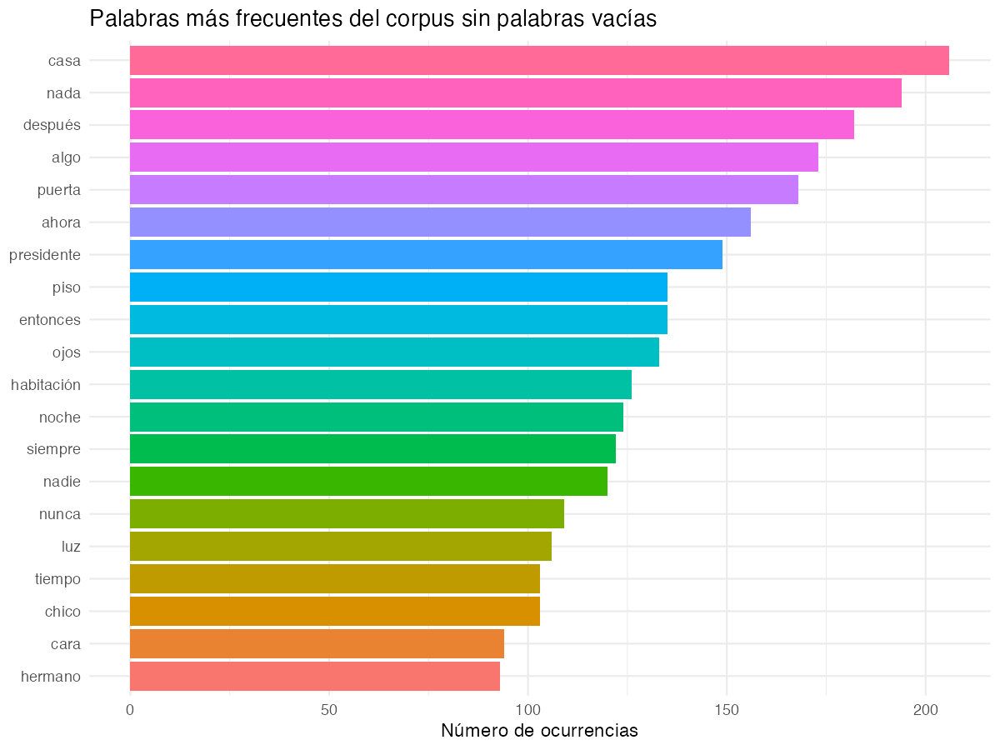
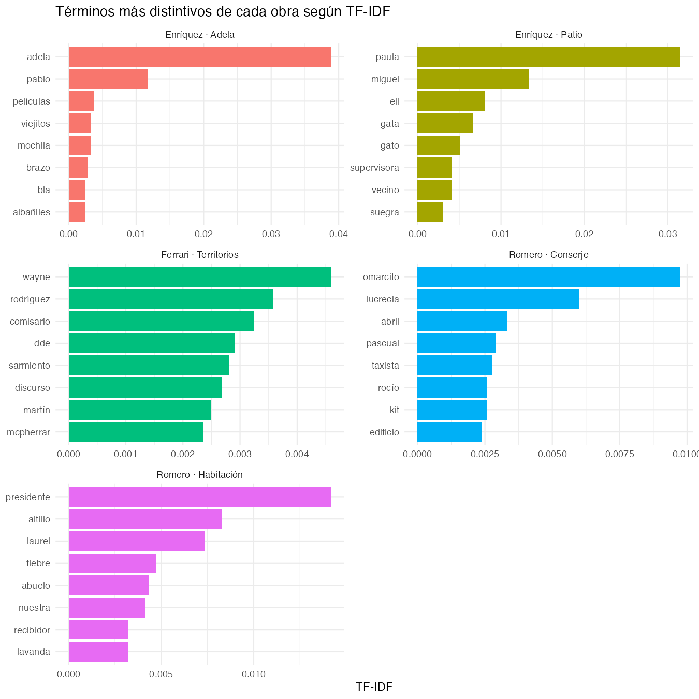
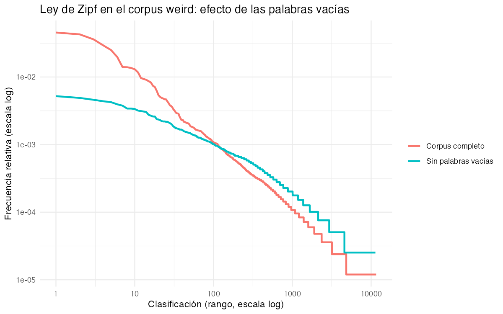

Memoria del Trabajo Integrador del Módulo — Actualización Técnica y Herramientas Digitales
Mi pregunta de investigación es qué les ocurre a las formas reconocibles cuando siguen funcionando después de perder su capacidad de orientarnos. La investigación mayor de la que este trabajo forma parte —En el umbral de la sensibilidad Weird— teoriza esa operación en la narrativa argentina y latinoamericana contemporánea mediante las categorías de umbral, entropía narrativa y no-colapso.
Este TIM retoma la devolución del Trabajo Práctico del primer cuatrimestre e invierte las jerarquías del anteproyecto: la muestra ya no es la infraestructura técnica sino el corpus crítico-literario, y la pregunta literaria interroga a las herramientas — no al revés. El contacto empírico con los datos produjo dos ajustes adicionales: la datificación y la normalización pasaron al centro del trabajo (el fine-tuning de modelos de lenguaje queda como horizonte de la tesis, no como fase de este módulo), y el estado material de los archivos —ruido de OCR, procedencias heterogéneas— dejó de ser un problema previo al análisis para volverse parte del objeto analizado.
El corpus de la muestra reúne cinco ficciones de tres autores centrales de la investigación:
| Texto | Autor/a | Tokens (Voyant) | Estado material |
|---|---|---|---|
| El conserje y la eternidad | Ricardo Romero | 35.021 | OCR de buena calidad, paratexto recortado |
| Territorios sin cartografiar | Kike Ferrari | 30.566 | OCR con daño sistemático, reparado parcialmente |
| La habitación del presidente | Ricardo Romero | 12.121 | OCR de buena calidad, paratexto recortado |
| «El patio del vecino» | Mariana Enríquez | 7.123 | Nacido digital (.txt original) |
| «La casa de Adela» | Mariana Enríquez | 4.157 | Nacido digital (versión web); reemplaza a un OCR dañado |
El pipeline completo, con cada herramienta elegida por una razón explícita:
data/clean/, con el historial completo de
operaciones exportado como
historial_openrefine_corpus_weird.json — las reglas
aplicadas no se describen: se publican en formato re-ejecutable.media/Reporte_U5_Voyant_UmbralWeird_V1.pdf.scripts/analisis_textual_corpus_weird.Rmd —
frecuencias, TF-IDF por obra, leyes de Zipf y Heaps, y una prueba
estilométrica (Delta de Burrows). Aplica la misma lista de
stopwords que Voyant para que el contraste entre herramientas
sea limpio, y exporta sus gráficos a media/.index.html), sin servidores ni
dependencias de compilación, según el enfoque de computación
mínima.El contraste entre herramientas. Sobre los mismos archivos y con la misma lista de stopwords, Voyant y R arrojan conteos distintos: 35.021 contra 32.833 tokens para El conserje, 30.566 contra 28.688 para Territorios, 12.121 contra 11.448 para La habitación, 7.123 contra 6.696 para El patio, 4.157 contra 3.953 para Adela. La divergencia es sistemática (5–6%, siempre en la misma dirección) y se explica por decisiones de preprocesamiento: tokenización diferente y la limpieza adicional del script en R (remoción de dígitos y de tokens residuales de un carácter). La lección metodológica es doble: ninguna cifra absoluta es "el" tamaño del texto — depende del instrumento —, pero la forma de los resultados (rankings, distribuciones, perfiles por obra) se conserva entre herramientas. Lo robusto no es el número sino la estructura.
Frecuencias: la casa y la indeterminación. Con las vacías filtradas, el término más frecuente del corpus es casa (~205 ocurrencias) y el segundo es nada (~193); los acompañan puerta, piso, habitación (arquitectura doméstica), algo y nadie (los indefinidos preservados), después, ahora, entonces, siempre, nunca (deixis temporal) y ojos, noche, luz, cara (condiciones de visibilidad). La convivencia estadística entre insistencia espacial e indeterminación es una entrada cuantitativa a mi concepto de umbral: el espacio sigue siendo reconocible mientras su capacidad de garantizar continuidad queda bajo sospecha — la casa conserva las paredes; el plano ya no garantiza una salida. Voyant agrega un dato que las stopwords ocultan: la negación no registra 1.652 ocurrencias en el corpus crudo, y el ritmo sintáctico diferencia respiraciones (oración media de 9,9 palabras en El conserje contra 17,0 en El patio).

Figura 1. Frecuencias del corpus sin palabras vacías (R, tidytext). Elaboración propia.TF-IDF y estilometría. El vocabulario distintivo de cada obra perfila sus procedimientos (en La habitación, la arquitectura como procedimiento: altillo, recibidor; en Adela, consumos culturales, objetos, corporalidad), y el Delta de Burrows produce el resultado más consistente del análisis: dos pares de vecinos mutuos que coinciden con la autoría (Adela–Patio: Δ 1,105; Conserje–Habitación: Δ 0,941), pese a extensiones muy desiguales dentro de cada par. Las 150 palabras funcionales más frecuentes captan regularidades de la mano autoral, lo que precisa mi hipótesis: la sensibilidad weird opera como construcción transversal que no borra la firma de cada autor. Las leyes de Zipf (pendiente −0,978 del corpus completo, cercana al canon) y de Heaps completan el cuadro con una cautela central desarrollada en §4.

Figura 2. TF-IDF por obra: lo distintivo de cada territorio narrativo. Elaboración propia.
Figura 3. Ley de Zipf con y sin palabras vacías. Elaboración propia.El detalle completo, con sus interpretaciones y sus límites, está en
el documento tejido: scripts/analisis_textual_corpus_weird.html.
La narrativa georreferenciada del proyecto — Territorios sin cartografiar. Cinco umbrales del weird argentino (StoryMapJS, actividad de Historias Visuales) — se presenta en estado de prototipo. Su estructura está definida en siete filminas: una portada con el argumento cartográfico, una parada por obra y un cierre orientado al trabajo final. El prototipo permite recorrer la portada — que fija la tesis sobre el Plano de Buenos Aires y alrededores de Carlos de Chapeaurouge (1909, David Rumsey Map Collection), un catastro que pretende registrarlo todo, desmentido por el corpus — y la primera parada, «La casa de Adela», anclada en Lanús con verificación textual en el propio cuento («nuestro barrio gris de Lanús»). Quedan pendientes las paradas restantes y la publicación de una versión navegable; al cierre de esta memoria el prototipo no cuenta con un enlace público, por lo que no se consigna. Su criterio cartográfico — el marcador identifica el territorio narrativo, no la ubicación real de una casa — y su paradoja constitutiva (la herramienta obliga a fijar coordenadas; el corpus las desborda) son el aporte conceptual de esta dimensión: en cada punto del mapa, el relato abre un umbral donde la coordenada deja de garantizar el lugar.
Derechos de autor contra apertura de datos. Las
cinco obras están bajo derechos vigentes: publicar los textos completos
en un repositorio abierto sería republicación no autorizada.
data/raw/ contiene por eso fragmentos de
muestra bajo el umbral del derecho de cita (art. 10, Ley
11.723), con la decisión documentada en
data/raw/NOTA_METODOLOGICA.md; los textos íntegros
permanecen en el entorno local, excluidos del versionado mediante
.gitignore. La reproducibilidad pública se sostiene con
derivados no consumibles (dataset normalizado, historial de OpenRefine,
stopwords, metadatos). La tensión entre la ciencia abierta que la
cátedra promueve y el régimen de propiedad del corpus contemporáneo no
es un trámite: es un límite estructural de las humanidades digitales
sobre literatura viva, y este repositorio lo exhibe en lugar de
disimularlo.
La materialidad del archivo como variable. El TF-IDF detectó formas rotas de OCR (dde) entre los términos "distintivos" de Territorios: la singularidad estadística también puede proceder del deterioro del archivo, y el procedimiento no distingue origen narrativo de origen técnico. La misma incertidumbre alcanza a la ley de Heaps: Territorios muestra más vocabulario y mayor β que El conserje a tamaño comparable, pero cada variante defectuosa computa como palabra nueva, de modo que no puede atribuirse la diferencia al estilo sin antes separar texto de digitalización. En ambos casos el límite es productivo: los métodos cuantitativos funcionaron como auditoría de la digitalización, y la comprobación pendiente queda formulada (revisar formas de baja frecuencia; comparar segmentos de igual longitud con limpieza común).
Lo que la datificación pierde. El Sumario informa magnitudes; no registra aquello que mi marco necesita observar: cómo una misma superficie narrativa admite versiones incompatibles sin que ninguna se imponga (no-colapso), ni qué cambia en la posición del lector aun cuando llega una explicación (irreversibilidad). Mantener esa diferencia de escala — qué aporta el cálculo, dónde comienza la lectura conceptual — es la condición de uso honesto de estas herramientas.
Este esquema preliminar es el insumo directo del Trabajo Final de Maestría. Quedan establecidos: un corpus datificado con su cadena de custodia documentada; un pipeline reproducible de lectura distante con filtros curados teóricamente; una prueba estilométrica replicable; y un repositorio público como infraestructura de trazabilidad. Sobre esa base, la tesis proyecta la instanciación del marco conceptual en la cadena documental, con el ajuste fino de modelos de lenguaje (ORPO/QLoRA sobre Umbral Weird) como horizonte — ahora con la lección de este módulo incorporada: antes de entrenar ningún modelo, la pregunta crítica debe gobernar la arquitectura técnica, y el estado material de los datos condiciona todo lo que se construya sobre ellos.
Repositorio público: github.com/EugenioTorresFlawia/territorios-sin-cartografiar
— estructura: data/raw/ (fragmentos de muestra + nota
metodológica), data/clean/ (dataset normalizado, historial
OpenRefine, metadatos, stopwords), scripts/ (R Markdown
reproducible y su HTML), media/ (gráficos R, capturas y
reporte Voyant). Los materiales propios se publican en abierto; los
textos del corpus, en la medida que el derecho de cita permite.
Burrows, J. (2002). 'Delta': a Measure of Stylistic Difference and a Guide to Likely Authorship. Literary and Linguistic Computing, 17(3), 267–287.
De León, R. (2026). Materiales del Módulo de Actualización Técnica y Herramientas Digitales (Unidades 1–8). UNTREF, Maestría en Humanidades Digitales.
Gil, A. (2019). Minimal Computing: A Digital Humanist's Philosophy. En M. K. Gold y L. F. Klein (Eds.), Debates in the Digital Humanities 2019. University of Minnesota Press.
Ley 11.723 de Régimen Legal de la Propiedad Intelectual (Argentina), art. 10.
Mosteller, F., & Wallace, D. L. (1963). Inference in an Authorship Problem. Journal of the American Statistical Association, 58(302), 275–309.
R Core Team (2026). R: A Language and Environment for Statistical Computing (v. 4.6). R Foundation for Statistical Computing.
Sano, Y., Takayasu, H., & Takayasu, M. (2012). Zipf's Law and Heaps' Law Can Predict the Size of Potential Words. Progress of Theoretical Physics Supplement, 194, 202–209.
Silge, J., & Robinson, D. (2017). Text Mining with R: A Tidy Approach. O'Reilly.
Sinclair, S., & Rockwell, G. (2026). Voyant Tools (v. 2.6.21) [mirror SADiLaR].
Para este trabajo se utilizó Claude (Anthropic, 2026), vía claude.ai, con los siguientes usos: acompañamiento paso a paso en la sintaxis de Git/GitHub y depuración de sus errores; armado de la estructura del repositorio; adaptación del script R de la ejercitación de la Unidad 2 al corpus propio (rutas, lista de stopwords, exportación de gráficos); generación de los fragmentos de muestra y borrador de la nota metodológica según criterios definidos por el autor; verificación de resultados contra el repositorio público; y ensamblado de esta memoria a partir de textos interpretativos, decisiones y materiales previos del autor. No se utilizaron otras herramientas de inteligencia artificial generativa en la elaboración de este trabajo. Las interpretaciones de los resultados, la reflexión crítica y las decisiones metodológicas son de autoría propia; todo borrador asistido fue revisado y editado antes de su incorporación. La información cuantitativa fue verificada contra las salidas efectivas de R y de Voyant Tools.
Referencia: Anthropic (2026). Claude [modelo de lenguaje]. https://claude.ai — Acceso: 11 de noviembre de 2026.